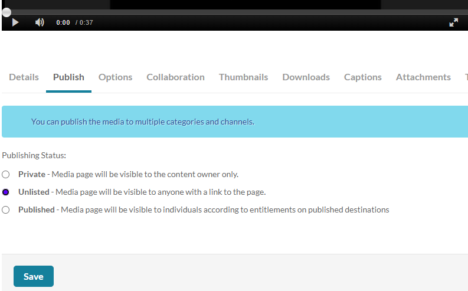

The goal of this final project is to reverse-engineer a piece of recent malware using everything you have learned in this course. After doing so, you will create a narrated screencast that walks-through your process of obtaining the malware, running the analysis on it, and analyzing its behavior. Properly edit the screencast so that your analysis is under 20 minutes. Screencast software and uploading the screencast will be done via PSU's MediaSpace.
For Windows-based malware, you may use our institution's academic account to download copies of recent versions of the operating system. Follow the instructions at this link: https://cat.pdx.edu/services/software/users/microsoft-software/ . You may also use Microsoft Edge Developer to download Virtual Machines for testing: https://developer.microsoft.com/en-us/microsoft-edge/tools/vms/. After installation, you may perform the analysis on equivalent static and dynamic analysis tools.
To find resources for malware to analyze, visit the links below:
- VirusTotal
- Daily Dose of Malware script
- Malware Bazaar Database (SolarWinds sample)
- MalShare (SolarWinds sample)
- awesome malware analysis
- theZoo (SolarWinds sample)
- Virus Underground
The rubric can be found below:
1. Reproducibility Does the walkthrough provide sufficient detail to reproduce including how to obtain the malware being analyzed? Are there instructions for setting up the VM and/or installing any software outside of that used in the course VM? |
2. Static analysis Does the walkthrough show the application of the tools applied in Part 1 of the textbook for analyzing the malware sample? |
3. Dynamic analysis Does the walkthrough examine key functionality of the malware as identified in disassemblers and debuggers used to analyze it? |
4. Difficulty and depth How much analysis has been done in the walkthrough? How precise and concise is the analysis? |
You may use software of your choice for the screencasts. Options include video conferencing applications such as Google Meet and Zoom or dedicated programs such as OBS Screen Recorder, QuickTime (MacOS), Screencast-O-Matic (Windows), or RecordMyDesktop (Linux). In addition, CaptureSpace Lite is available via PSU's Media Space (https://media.pdx.edu).
Upload your completed screencast on MediaSpace. Ensure that it is published as "Unlisted". To do so, visit MediaSpace and click on "My Media".

Click on the screencast video that has been uploaded. Then, in the tabs below, select the "Publish" tab, click on "Unlisted", and then "Save".

Find the video on MediaSpace and get its URL. Submit the URL in Canvas under the "Final Project" assignment.